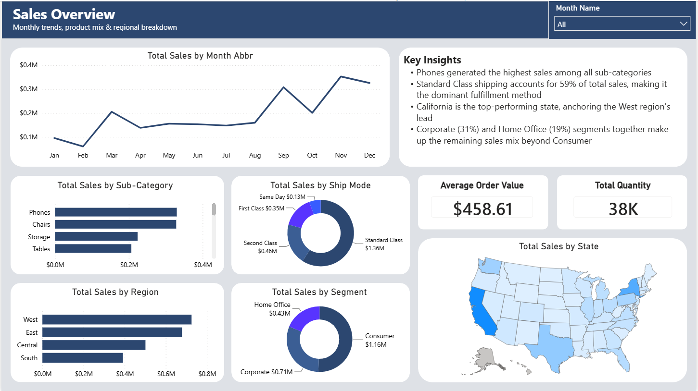

Projects
FP&A models, variance workbooks, and BI dashboards — each one built from a realistic finance scenario, not a course template.

Corporate Expense Variance Analysis (BvA)
S&M overspent by $1.38M. R&D underspent by $610K, but not for a good reason. A full-year Budget vs. Actual model built in Excel with dashboard and commentary.
View case study →
TXN Three-Statement Model & DCF Valuation
Driver-based three-statement model of Texas Instruments (FY2023–FY2025) with a five-year forecast, CAPM cost of equity, and an unlevered DCF with WACC sensitivity table.
View case study →
Retail Financial Performance Analytics
Sample Superstore interactive dashboard — sales performance, profit margins, and regional breakdowns, built and published in Power BI Service.
View live dashboard ↓